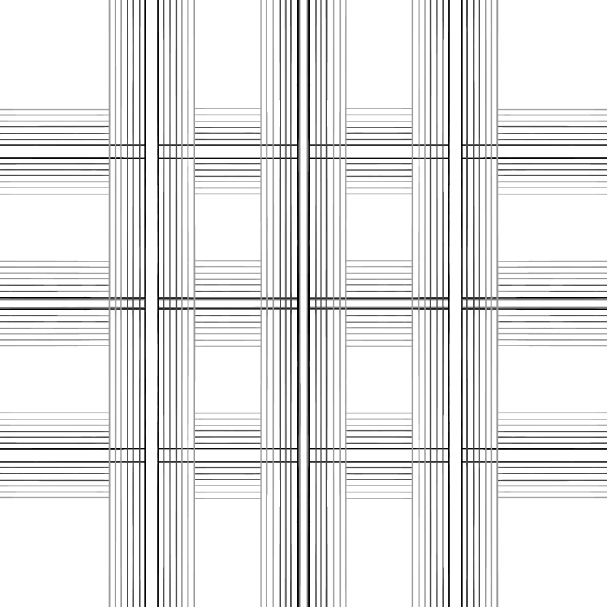
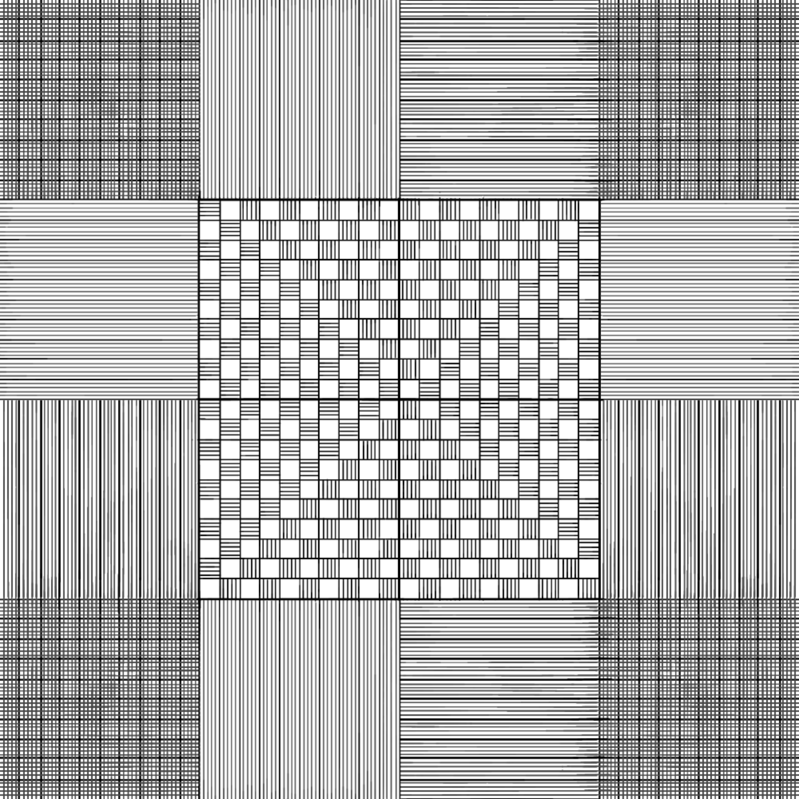
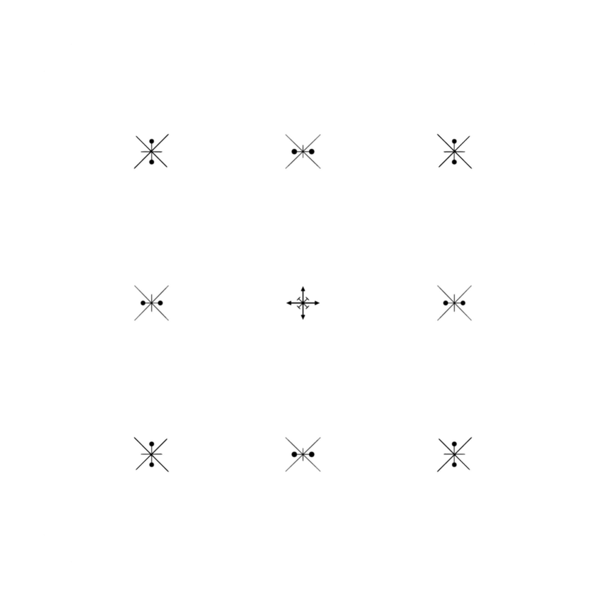

Warsztat Kompozycji
PROJEKT 1: Struktury na schemacie
Parametry techniczne: Kwadratowy arkusz 20x20cm, rozdzielczość 300dpi, praca wyłącznie w skali szarości.
Celem projektu było zrealizowanie trzech zadań na ustalonym schemacie, zachowując stałe miejsca elementów:
- Zadanie 1: Manipulacja schematem w taki sposób, aby odbiorca widział wyłącznie kwadraty.
- Zadanie 2: Wyodrębnienie i pokazanie 6 wyraźnych linii na schemacie.
- Zadanie 3: Wyodrębnienie i pokazanie 9 punktów na schemacie.



PROJEKT 2: Cechy podobieństwa i uniwersalność
Celem projektu było ukazanie cech podobieństwa w układach góra/dół oraz lewo/prawo. Prace musiały zachować uniwersalność interpretacji – kształty powinny być rozpoznawalne dla każdego odbiorcy.
- Wariant 1: Wykorzystanie wyłącznie czarnych linii i domkniętych kształtów o stałej grubości konturu. Brak nachodzenia na siebie elementów dla zachowania ich jednoznaczności.
- Wariant 2: Wprowadzenie barw (z wykluczeniem czystej skali szarości) przy jednoczesnym usunięciu linii dzielących.
- Wariant 3: Całkowite wypełnienie płaszczyzny czarno-białymi teksturami przy usunięciu konturów linii.


PROJEKT 3: Dwie maksymalnie różne kompozycje
Zadanie polegało na stworzeniu dwóch kontrastujących ze sobą kompozycji na formatach odpowiadających kartce A4, przy zachowaniu tej samej orientacji obu arkuszy.
Zasady: Wykorzystanie tego samego kształtu o identycznym rozmiarze, powtórzonego dokładnie 4 razy. Elementy mogą się stykać punktowo, ale nie mogą na siebie nachodzić ani wychodzić poza krawędź płaszczyzny (canvas).


PROJEKT 4: Relacje układów i funkcjonalność
Stworzenie jednej kompozycji na wspólnej płaszczyźnie, zawierającej dwa maksymalnie różne układy. Rozróżnienie układów opiera się na analizie liczebności, wyglądu (rozmiar, kolor, kształt) oraz relacji elementów względem siebie i płaszczyzny.
- Aspekty analizy: Struktura (powiązania przestrzenne) oraz funkcjonalność (różnica między wyglądem a działaniem elementu).
- Relacje: Relacja przynależności (cechy wspólne zbioru) oraz relacje porządkujące (wyraźna hierarchia i powiązania między wybranymi elementami).